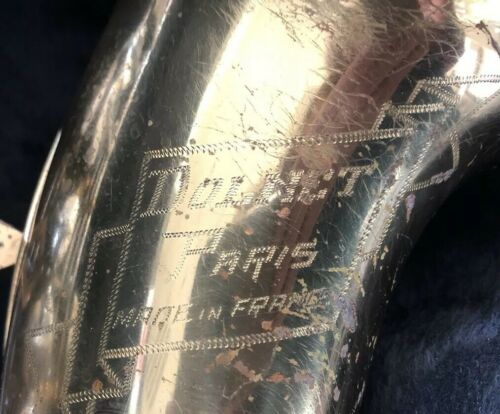

Số là ông anh mình muốn biết thông tin về dòng Alto và Tenor của hãng kèn Dolnet. Sẵn tiện biết thêm về lịch sử mấy hãng kèn cũng khá thú vị nên ghi chú lại luôn.
"Dolnet" (phát âm là DOL-NAY), là một hãng sản xuất kèn saxophone tại nước Pháp (cùng với Pierret, Couesnon), sản xuất kèn từ năm 1880 đến 1994. Quy mô của hãng rất nhỏ, chỉ sản xuất được khoảng 500 cây kèn saxophone mỗi năm.